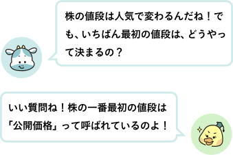
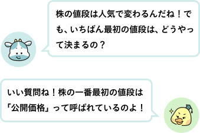
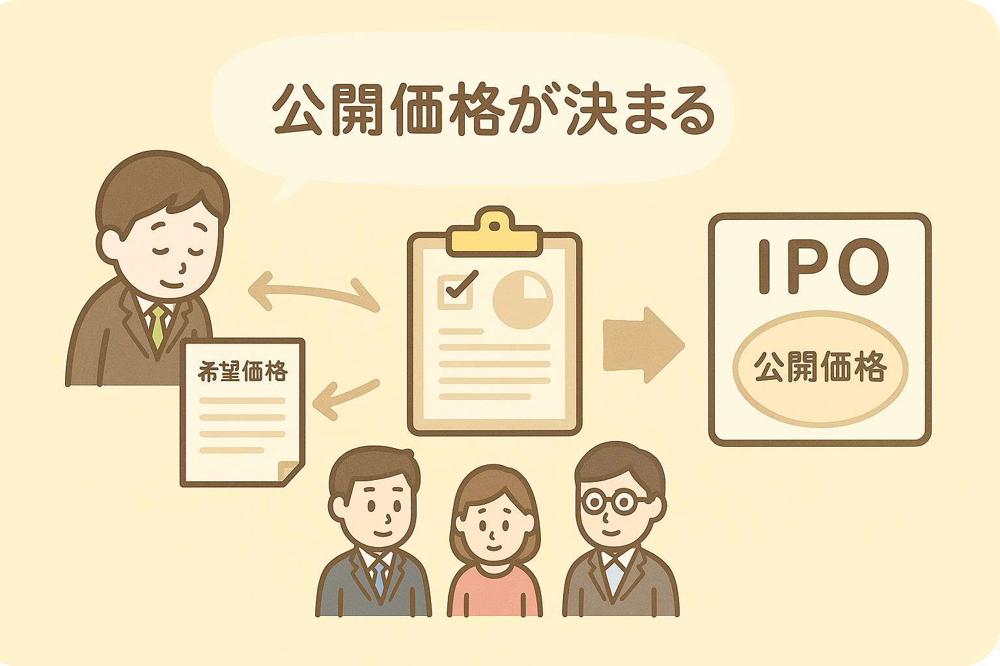
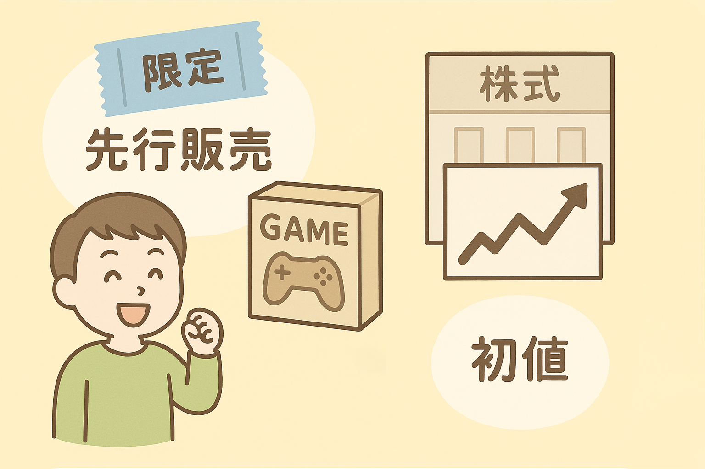
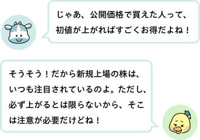

● 「公開価格」とは？

会社が株を初めて売り出すとき（＝新規上場）には、まず「公開価格（こうかいかかく）」という値段が決まります。
公開価格は、会社からの希望価格と、証券会社が投資家たちにとったアンケートを元に決められます。
公開価格で買えるのは、抽選に当たった一部の人や、機関投資家、会社関係者などに限られています。
● 実際の取引で決まる「初値（はつね）」

公開価格は、会社からの希望価格と、証券会社が投資家たちにとったアンケートを元に決められます。
公開価格で買えるのは、抽選に当たった一部の人や、機関投資家、会社関係者などに限られています。
● 実際の取引で決まる「初値（はつね）」
公開価格での取引は、ゲームの限定グッズが、抽選に当たったファンだけに「先行販売」されるようなイメージです。
この例えでいうところの「一般販売」は、証券取引所での取引です。証券取引所で株の売り買いが始まって、最初に取引が成立したときの値段を「初値（はつね）」といいます。
この「初値」は、公開価格と比べて、人気が高ければ高くなるし、逆に人気がなければ安くなってしまうこともあります。
つまり、初値は「実際の市場での最初の評価」ともいえるのです。

この例えでいうところの「一般販売」は、証券取引所での取引です。証券取引所で株の売り買いが始まって、最初に取引が成立したときの値段を「初値（はつね）」といいます。
この「初値」は、公開価格と比べて、人気が高ければ高くなるし、逆に人気がなければ安くなってしまうこともあります。
つまり、初値は「実際の市場での最初の評価」ともいえるのです。
● 非上場企業の株はどうやって決まるの？
非上場企業の株は、証券取引所でのやりとりがありません。そのため、売りたい人と買いたい人が話し合って、個別に値段を決めるのが基本です。
たとえば、ある会社の社員が「自分の株を売りたい」と思ったとき、会社やほかの株主に相談して、「じゃあ1株〇〇円でどうですか？」と交渉して決めるのです。
このように、非上場企業の株の値段には、明確な「市場価格」がありません。 そのため、取引は少なく、慎重に行われることが多いです。
非上場企業の株は、証券取引所でのやりとりがありません。そのため、売りたい人と買いたい人が話し合って、個別に値段を決めるのが基本です。
たとえば、ある会社の社員が「自分の株を売りたい」と思ったとき、会社やほかの株主に相談して、「じゃあ1株〇〇円でどうですか？」と交渉して決めるのです。
このように、非上場企業の株の値段には、明確な「市場価格」がありません。 そのため、取引は少なく、慎重に行われることが多いです。
次回は「株主ってえらいの？」というお話。株主になって得られる“会社の一部の権利”とは、具体的にどんなものなのでしょうか？